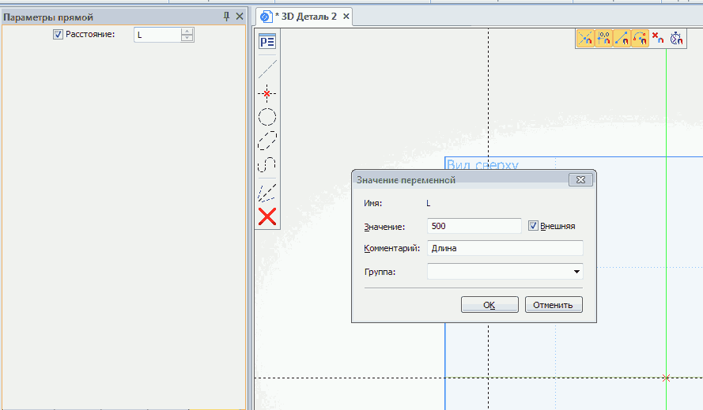

6. Создание модели в T-FLEX с использованием параметров
Создадим модель параллелепипеда с заданием его размеров при помощи переменных.
Создадим эскиз на рабочей плоскости Вид сверху, построим две пересекающиеся прямые и отложим длину параллелепипеда.
Расстояние смещения прямой (длину будущего параллелепипеда) обозначимбуквой L и нажьём Enter.
В появившееся окно введём значение переменной L, в коментариизапишем её название Длина и поставим при необходимости флажок
на Внешняя для видимости переменной при вставке в сборку.
Нажмём ОК
